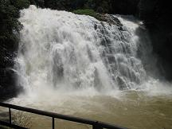
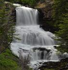
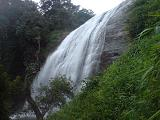
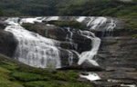
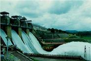

Baby Cottage
Abbi Waterfalls
Abbi Falls, sometimes refered to as Abby Falls, is situated just 7 kilometers from Madikeri town. Reaching the place is a jolly ride in itself as the road that you drive on is very narrow with lots of turns and twists, ups and downs. A smiling mother nature welcomes you at every turn. This famous falls, situated on a private property, attracts a large number of tourists around the globe. The water level swells during monsoon. It is highly advised neither to swim nor to go close to the waterfalls. The falls is more enjoyable within the fenced area wherefrom you get its friendly pose for your camera! The best place to have a better view of the falls is by standing on the hanging bridge opposite to the falls itself.
How to reach Abbey/Abby waterfalls:Location: 7 Kms from Madikeri
Irpu Waterfalls
Irpu falls (Irupu Falls) runs down through the Bhramagiri hills located in Kutta village of Coorg. It is a stream of Lakshmana-Theertha river and also a sacred place. The water jets from about 60m high and finally joins river Cauvery. The famous temple of Lord Shiva, known as the Rameshwara Temple, is situated nearby. Wandering beyond the falls is restricted as the whole place is termed as wildlife sanctuary. This narrow water falls is extremely beautiful and soothing. The lush green mountains around the falls makes it look more eligant and picturesque. You can also relax at a refreshing pond halfway up the falls.
How to reach Irpu waterfalls:Location: Kutta village
Distance: 80 kms from Madikeri, 30kms from Gonikoppa, 25 kms from Nagarahole and about 48 km from Virajpet on the way to Nagarahole.
Chelavara Waterfalls
This ambushed but majestic stream-falls is an ideal place for budding trekkers and nature lovers. Reaching this place is full of fun and adventurous as one has to cruse through the countryside crossroads all along. You will have to walk for about a kilometer from the parking area to reach the falls. It is fairly easy to climb to the falls, but the incline and trail difficulty increases dramatically in the next few miles if you choose to continue beyond. Two kilometers from the falls is another enigmatic Hill, an ideal spot to enjoy the sunset. This falls is often miss-spelled as Chalvera Falls, which is incorrect.
It is more like a mini-trekking. People with knee pain might face difficulties. Older generation might not enjoy the trip to Chelavara falls. Do not leave children unattended at anytime. Carry all necessary things along with you, as there are no shops in the vicinity.It is advisable to take along water bottle, towel (if you intend to get into the water), eatables (if you wish to make it a picnic), first aid kit (you never know) and a camera! Try as much to wear trekking boots or sport shoes and avoid wearing slippers, sandals, high heels, formal/office shoes etc. Be extremely careful when you get into water in Coorg as it might cost you your sweet life. Safety first!
How to reach Chelavara waterfalls:Location: Chelavara village (Madikeri-Murnad-9 kms into Virajpet Road-deviation-Kadanga Town-Chelavara village)
Distance: 38 kms from madikeri
Mallalli Waterfalls
Nestled within the thick Forrest, the Mallalli falls (Mallali Falls) is one of the tallest waterfalls in the Coorg where river Kumaradhara, drops down from over 200 feet. Scattered along the stream you will find incredibly misty waterfalls. The Mallalli waterfall looks like a thick veil, flowing from 61 meters above to the waters below. A shimmering falls flowing through both rocks and outlined by brilliant green flora creates a calming atmosphere like no other. Mallalli falls is situated on the foothills of Pushpagiri hill-ranges. Be prepared for a truly magical experience.
How to reach Mallalli waterfalls:Location: Bettadahalli Gram Panchayat, Somwarpet Taluk
Distance: 50Kms from Madikeri towards Somwarpet; 42 Kms from Kushalnagar towards Somwarpet;
Harangi Dam
Harangi Dam, built across the tributary of river Cauveri, is located at Hadgur village that is around 8 kms from kushalnagar. With a height of 47 mts. and 846 mts. length, the dam attracts people mostly during the monsoon season when the released water roaringly splashes the ground. This place is ideal for weekend picknick with family and friends. Best time to visit the dam is between August to October. Guest house facility is available upon reservation from the public works department.
How to reach Harangi Dam:Location: Hadgur Village
Distance: 36 Kms from Madikeri and 8 Kms from Kushalnagar